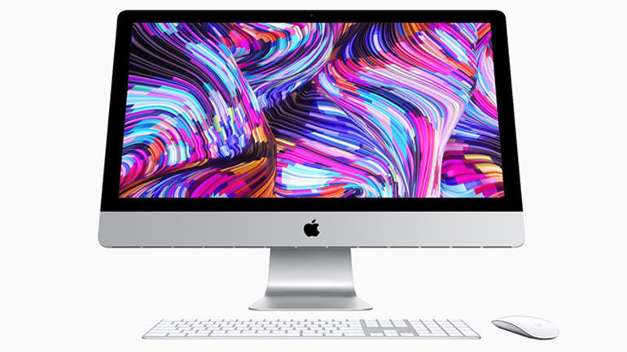
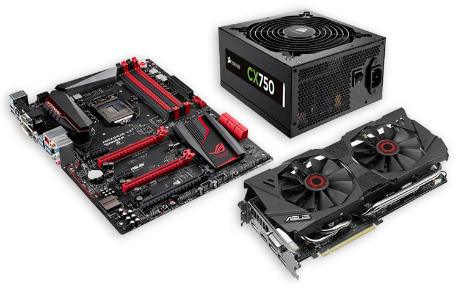

მოგიგვარებთ კომპიუტერთან დაკავშირებულ სხვადასხვა პრობლემას
მიიღებთ აუცილებელ და სასარგებლო რჩევებს
საჭიროების შემთხვევაში მიიღებთ დახმარებას სპეციალური პროგრამის, TeamViewer-ის საშუალებით
მომსახურება

კომპიუტერის შეკეთება:
- დიაგნოსტიკა
- Windows-ის ინსტალაცია
- ყველა საჭირო პროგრამისა და ანტივირუსის ჩაწერა
- ვირუსებისგან გაწმენდა, გაძლიერება
- დაკარგული ფაილების აღდგენა
- კომპიუტერის ნაწილების შეცვლა ახალი ან მეორადი ნაწილით

ნოუთბუქის შეკეთება:
- Windows-ის ინსტალაცია
- დიაგნოსტიკა
- გაწმენდა
- გაგრილება
- დაზიანებული ეკრანის, კლავიატურის, ვინჩესტერის, დამტენის ბუდის და სხვა ნაწილების შეცვლა

Mac-ის კომპიუტერების და ნოუთბუქების შეკეთება:
- MacOs-ის ინსტალაცია და განახლება
- Windows-ის ინსტალაცია
- ფაილების შენახვა
- გაძლიერება, აჩქარება
- ვინჩესტერის შეცვლა
- ტექნიკური გაწმენდა, გაგრილება, მტვრისგან გასუფთავება, თერმოპასტის გამოცვლა

კომპიუტერის ნაწილების შეკეთება, შესყიდვა:
- მონიტორი
- დედაბარათი
- ვიდეობარათი
- კვების ბლოკი
- უწყვეტი კვების წყარო(UPS)
- ვინჩესტერი
დაგვიკავშირდით: 123 45 67
-
ადგილზე მისვლის დრო:
-
მომსახურების ფასი:
საშუალოდ 30წ. დან - 1საათამდე
გარეუბნებში 1სთ. დან - 2 საათამდე
შესასრულებელი სამუშაოს, მისამართისა და დროის მიხედვით, შეთანხმებით